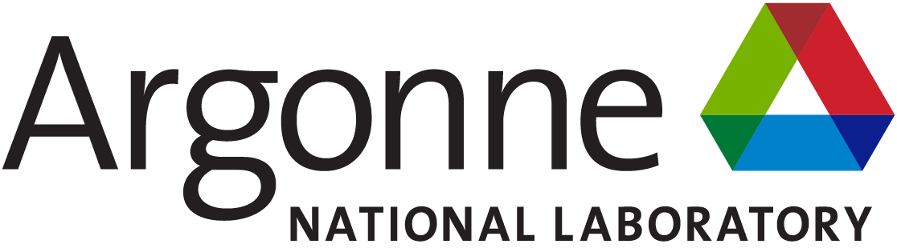

Roja Eswaran, PhD
Senior Engineer at GEICO


Technical Program Committee
- Internet of Things and Cloud Computing Journal [Reviewer]
Publications / Technical Talks
- Roja Eswaran Three advantages: Why edge computing demands a different developer mindset, In the All Things Open (ATO '25). Raleigh, North Carolina, October 12 2025 [Podcast Reference] [Article]
- Roja Eswaran Performance vs Security Tradeoff in Containers, In the All Things Open (ATO '25). Raleigh, North Carolina, October 13 2025 [Talk Reference] [Conference]
- Roja Eswaran, Mingjie Yan, Kartik Gopalan Template-aware Live Migration of Virtual Machines, In The Eighth ACM/IEEE Symposium on Edge Computing (SEC '23) EdgeComm. Delaware, December 2023 [paper] [bibtex]
- Roja Eswaran, Mingjie Yan, Kartik Gopalan Tackling Memory Footprint Expansion During Live Migration of Virtual Machines, IEEE/ACM international Symposium on Cluster, Cloud and Internet Computing (CCGrid). Philadelphia, May 2024 [paper] [bibtex]
- Roja Eswaran, Mingjie Yan, Kartik Gopalan Incorporating Memory Sharing-Awareness in Multi-VM Live Migration, IEEE/ACM international Symposium on Cluster, Cloud and Internet Computing (CCGrid). Philadelphia, May 2024 [paper] [bibtex]
- Roja Eswaran Sharing-Aware Live Migration of Virtual Machines, Doctoral Dissertation [paper] [bibtex]
- Roja Eswaran Reducing Hypervisor Overhead for Virutal Interrupt Delivery in KVM/ARM Platform, Submitted as a part of Research Proposal Exam (RPE) conducted by Binghamton University on Fall'20 [paper]
Opensource Contributions
- Proposed a patch which prevents race condition that arises due to applying and deleting kata-deploy.yaml multiple times [commit1]
- Integrated new QEMU CPU-Pinning feature into EVE [commit1]
- Reduced memory usage of Idle Kubvirt from 1.1G to 350MB [commit1] [commit2]
- Upgraded Xen-tool version to take from 4.18 to 4.19 for EVE to take advantage of QEMU version upgrade from 5.1 to 8.0.4 [commit]
- Optimized traditional memcpy by only copying the valid data instead of holes thereby reducing copy time by 10 times [repository]
- Accurate QEMU Timestamps to measure the total migration time and downtime for live migration [repository]
- Measured memory allocation overhead introduced by QEMU [repository]
- Userfaultfd-Aware-Mmap to have fine-grained control over processes' memory regions [repository]
- Kernel-level Timer and Inter-processor interrupt latency tests to measure the physical and virtual interrupt latency [repository1] [repository2]